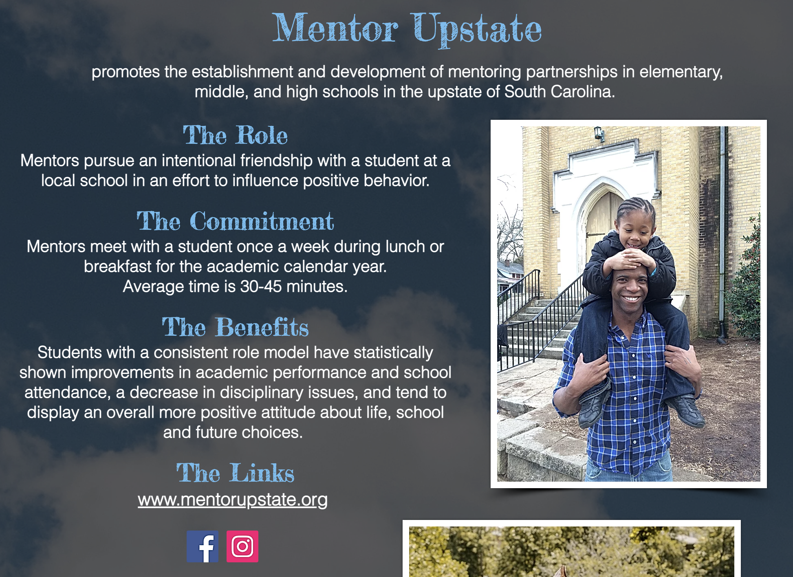
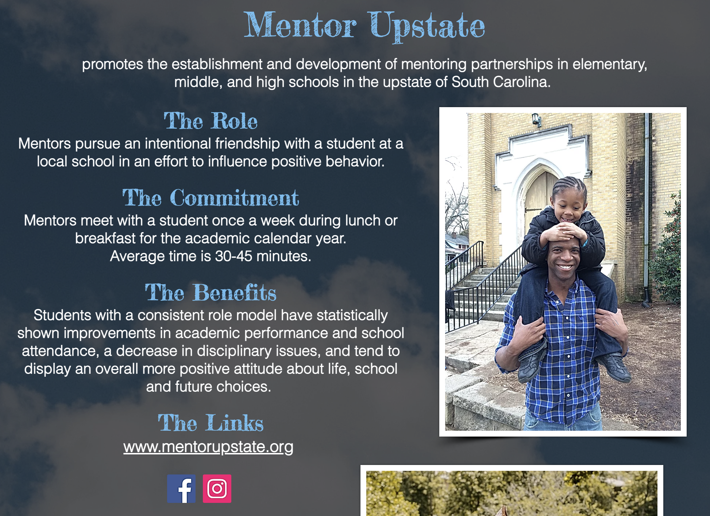

Research
The role of the Frazee Center is to better the education and lives of low-income children as they are enrolled in school by providing the resourses and programs to support their futures.


These images are just a few precious moments captured of the Frazee Center's after school program kids. From going hikes, to recieving new books, and going on bike rides; these girls get to experience invigorating and encouraging moments with our volunteers.
Our Staff and Founders


These are the members (first image) and founders (second image) of the Frazee Center. Jenny and Matt Reeves are the head organizers and leaders of this organization.
In 2006, Jenny and Matt Reeves and several like minded families wanted to make a difference in the lives of children. An after school program began in the gym and renovated classrooms of the historic Central Baptist Church on Pinckney Street with ten children from the adjacent neighborhood. By 2016, the center averaged 140 students attending daily ranging in age from 3-15 with year round programming, academic assistance, athletics, and meals offered to them free of charge. Over the years, the building itself became an "open door" community center for local organizations that shared in the mission of positively impacting children and young adults. YouthBASE, GOAT, City Youth Sports, AAU Basketball and newly founded PMAC and GirlUp GVL are just a few of the non profits that have woven in and out of Frazee's fabric and shared space on Pinckney.
The ability to keep the doors open for so many was made possible by partnerships with countless civic organizations, businesses, churches, youth groups, high schools, middle schools, college students, families and dedicated volunteers from all over the country that have freely given of their time and resources. Frazee's history is the story of these individuals that are far too many to name and the generous donors that have supported this endeavor so faithfully through the years.

Mentor Upstate


 

Mentor Upstate is one of our main programs established through the Frazee Center. Its purpose is to promote the establishment and development of mentoring partnerships in elementary, middle, and high schools in the upstate of South Carolina.
The Role
Mentors pursue an intentional friendship with a student at a local school in an effort to influence positive behavior.
The Commitment
Mentors meet with a student once a week during lunch or breakfast for the academic calendar year. Average time is 30-45 minutes.
The Benefits
Students with a consistent role model have statistically shown improvements in academic performance and school attendance, a decrease in disciplinary issues, and tend to display an overall more positive attitude about life, school and future choices.
click here for more infoFunding
We are funded solely by generous donors in our community and beyond. We receive no Federal or State financial support. The Frazee Center is a 501(c)(3) Tax Exempt Organization recognized by the IRS and the South Carolina Division of Public Charities. All donations are tax deductible. Tax ID # 46-1185268
We've recently moved locations! The center has relocated to a new facility at 2115 Anderson Road Greenville SC 29611. To read more about the move, click here.

Additional Research


Greenville Nonprofits Article on Mentor Upstate.